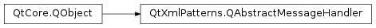

QAbstractMessageHandler¶
Synopsis¶
Virtual functions¶
- def
handleMessage(type, description, identifier, sourceLocation)
Detailed Description¶
The
PySide2.QtXmlPatterns.QAbstractMessageHandlerclass provides a callback interface for handling messages.
PySide2.QtXmlPatterns.QAbstractMessageHandleris an abstract base class that provides a callback interface for handling messages. For example, classPySide2.QtXmlPatterns.QXmlQueryparses and runs an XQuery . When it detects a compile or runtime error, it generates an appropriate error message, but rather than output the message itself, it passes the message to thePySide2.QtXmlPatterns.QAbstractMessageHandler.message()function of itsPySide2.QtXmlPatterns.QAbstractMessageHandler. SeeQXmlQuery.setMessageHandler().You create a message handler by subclassing
PySide2.QtXmlPatterns.QAbstractMessageHandlerand implementingPySide2.QtXmlPatterns.QAbstractMessageHandler.handleMessage(). You then pass a pointer to an instance of your subclass to any classes that must generate messages. The messages are sent to the message handler via thePySide2.QtXmlPatterns.QAbstractMessageHandler.message()function, which forwards them to your handleMessge().A single instance of
PySide2.QtXmlPatterns.QAbstractMessageHandlercan be called on to handle messages from multiple sources. Hence, the content of a message, which is the description parameter passed toPySide2.QtXmlPatterns.QAbstractMessageHandler.message()andPySide2.QtXmlPatterns.QAbstractMessageHandler.handleMessage(), must be interpreted in light of the context that required the message to be sent. That context is specified by the identifier and sourceLocation parameters toPySide2.QtXmlPatterns.QAbstractMessageHandler.message()PySide2.QtXmlPatterns.QAbstractMessageHandler.handleMessage().
-
class
PySide2.QtXmlPatterns.QAbstractMessageHandler([parent=nullptr])¶ Parameters: parent – PySide2.QtCore.QObjectConstructs a
PySide2.QtXmlPatterns.QAbstractMessageHandler. Theparentis passed to thePySide2.QtCore.QObjectbase class constructor.
-
PySide2.QtXmlPatterns.QAbstractMessageHandler.handleMessage(type, description, identifier, sourceLocation)¶ Parameters: - type –
PySide2.QtCore.QtMsgType - description – unicode
- identifier –
PySide2.QtCore.QUrl - sourceLocation –
PySide2.QtXmlPatterns.QSourceLocation
This function must be implemented by the sub-class.
PySide2.QtXmlPatterns.QAbstractMessageHandler.message()will call this function, passing in its parameters,type,description,identifierandsourceLocationunmodified.This function can potentially be called from multiple threads. It’s the reimplementation’s responsibility to ensure thread safety.
- type –
-
PySide2.QtXmlPatterns.QAbstractMessageHandler.message(type, description[, identifier=QUrl()[, sourceLocation=QSourceLocation()]])¶ Parameters: - type –
PySide2.QtCore.QtMsgType - description – unicode
- identifier –
PySide2.QtCore.QUrl - sourceLocation –
PySide2.QtXmlPatterns.QSourceLocation
Sends a message to this message handler.
typeis the kind of message being sent.descriptionis the message content. Theidentifieris a URI that identifies the message and is the key to interpreting the other arguments.Typically, this class is used for reporting errors, as is the case for
PySide2.QtXmlPatterns.QXmlQuery, which uses aPySide2.QtXmlPatterns.QAbstractMessageHandlerto report compile and runtime XQuery errors. Hence, using aPySide2.QtCore.QUrlas the messageidentifieris was inspired by the explanation of error handling in the XQuery language. Because theidentifieris composed of a namespace URI and a local part, identifiers with the same local part are unique. The caller is responsible for ensuring thatidentifieris either a validPySide2.QtCore.QUrlor a default constructedPySide2.QtCore.QUrl.sourceLocationidentifies a location in a resource (i.e., file or document) where the need for reporting a message was detected.This function unconditionally calls
PySide2.QtXmlPatterns.QAbstractMessageHandler.handleMessage(), passing all its parameters unmodified.See also
http://www.w3.org/TR/xquery/#errors- type –
© 2018 The Qt Company Ltd. Documentation contributions included herein are the copyrights of their respective owners. The documentation provided herein is licensed under the terms of the GNU Free Documentation License version 1.3 as published by the Free Software Foundation. Qt and respective logos are trademarks of The Qt Company Ltd. in Finland and/or other countries worldwide. All other trademarks are property of their respective owners.